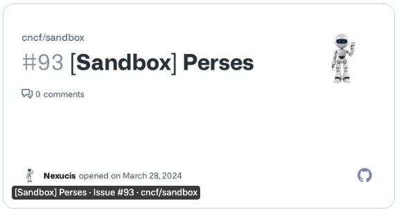
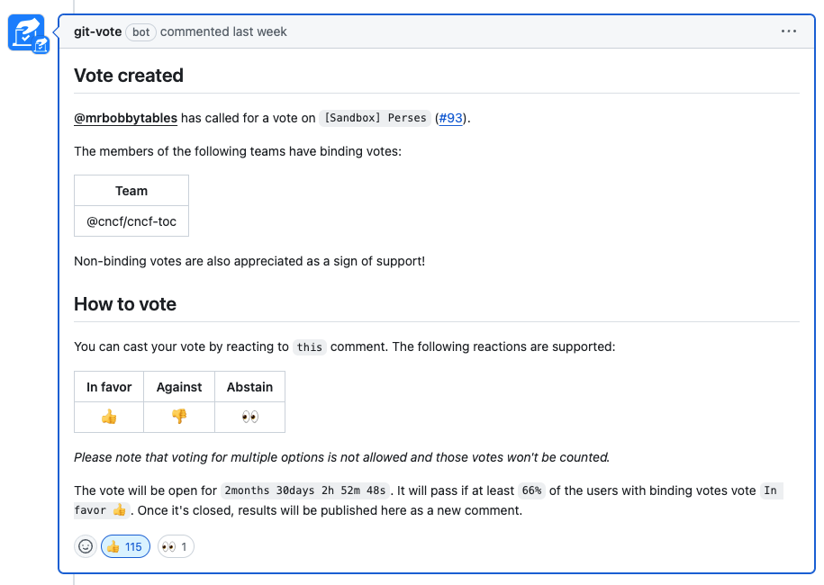
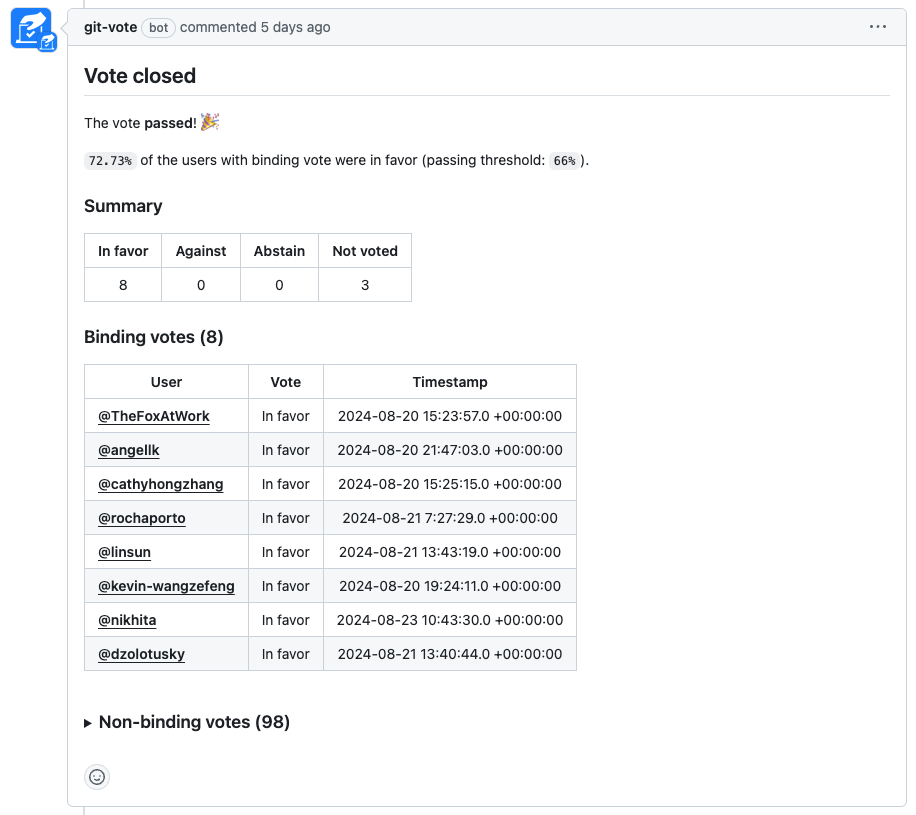
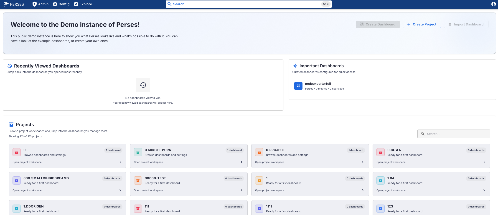

Lab 1 - Introduction to Perses
Lab Goal
To gain an understanding of the Perses project.
Introduction - Early beginnings
Perses is an exploration into finding an open source standard for visualization and dashboards,
initially for metrics monitoring. It started as a Linux Foundation project and later promoted
into the Cloud Native Computing Foundation (CNCF) as a Sandbox project.
Introduction - What is the Perses project?
Since joining the CNCF, Perses has continued to grow its presence as the first observability
dashboard + visualization project. Some links to explore:
Introduction - Perses project goals (1/2)
- Become an open standard dashboard visualization tool
- Have well-defined dashboard definition model
- Statically validated dashboards with CLI and CUE schemas
- GitOps compatible for dashboard-as-code workflows
- Perses runs locally, edit dashboard JSON file in Git
- Provide embeddable charts and dashboards in any user interface
- Provide different NPM packages
- Example usage could be to improve graph display in Prometheus (or embed)
Introduction - Perses project goals (2/2)
- Target Kubernetes (k8s) native mode
- dashboard defs deployed into & read from app namespaces (CRDs)
- Provide complete static validation for CI/CD pipelines
- To be friendly to
Dashboard-as-Codeusers, by providing a complete static validation of the dashboard format - Provide command line client:
percli
- To be friendly to
- Support plugins, to allow users to extend the capacities natively provided
Chat with Perses project team?
Introduction - Perses CNCF project
In March 2024 Perses
applied to become a
Cloud Native Computing Foundation (CNCF) Sandbox project. Currently, the CNCF has no dashboard
or visualization solution in the Observability area. Being part of the CNCF provides the project
visibility and end users with an alternative to vendor visualization observability.

Introduction - New kid in the sandbox
In the third week of August 2024, the CNCF officially opened up
voting on the Perses application
. In less than two weeks time the
required threshold of 66% of the voting members
was reached, along with almost 100 non-binding votes from the community, and Perses is
officially the new kid in the CNCF Sandbox!


Introduction - Perses demo and docs
Perses has online documentation included with the
project website and also provide a
Perses demo instance to explore after
logging in:

Lab completed - Results
We gained a basic understanding of the Perses project.
Next up, installing Perses project on your machine...

Contact - are there any questions?
Eric D. Schabell
Director Evangelism
Contact: @ericschabell {@fosstodon.org) or https://www.schabell.org
Director Evangelism
Contact: @ericschabell {@fosstodon.org) or https://www.schabell.org